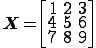

We will look at the most common R data structures:
- Vectors
- Matrices
- Dataframes
We also briefly cover lists.
Vectors
A vector is an ordered collection of elements of the same type, that is either numeric or character data.
To create a vector in R we use the collect operator c(). For example
myvector<-c(1:10)
This command collects the integers from 1 to 10 (with the default increment of 1) and assigns them to the variable named myvector. We can now use the name myvector to refer to this object.
One important feature of R is that many functions and procedures operate vectorwise, that is they operate over all elements of a vector at one. Consider
myvectorsquared<-myvector^2
which produces the new object
1 4 9 16 25 36 49 64 81 100
You can address or access single elements of a vector using an index sometimes called a subscript. So
myvector[3]
refers to the third element of myvector.
If you are familiar with the use of indexing in other computer languages you will want to make a note that unlike most, R indexing begins with 1 not from 0. The index 0 will return the type of the object not a value
Matrices
A matrix is a two dimensional rectangle of data. So this is a matrix named X:

We use the indices like this
X[2,2]
returns the value 5. That is the element in the second row and the second column.
One way to create vectors in R is by combining vectors. Let us say that we wish to create a matrix of data that represents some attributes of subjects in a study: their height and weight. We create two vectors, call them height and weight and combine them with cbind.
height<-c(1.2,1.6,1.3)
weight<-c(90,145,120)
attribs<-cbind(height,weight)
attribs
height weight
[1,] 1.2 90
[2,] 1.6 145
[3,] 1.3 120
Notice the bracketed index on in the left margin of the table. The first number in the square brackets is the row index. The second element is the column index. Here instead of a number the second element is , which is read by R as indicating all columns.
Alternatively we may have a new row of data for a new subject in the study. We could add this row with rbind.
attribs<-rbind(attribs,c(1.7,350))
attribs
height weight
[1,] 1.2 90
[2,] 1.6 145
[3,] 1.3 120
[4,] 1.7 350
So the function cbind binds columns together and the function rbind binds rows together.
Alternatively we can create a matrix using the function matrix as follows
mymatrix<-matrix(c(1,2,3,4,5,6,7,8,9),nrow=3,ncol=3)
mymatrix
[,1] [,2] [,3]
[1,] 1 4 7
[2,] 2 5 8
[3,] 3 6 9
The function takes a vector as its first input and then two parameters nrow the number of rows and ncol the number of columns. It then distributes the elements of the vector over a matrix with that number of rows and columns in order. You can omit the keywords ncol and nrow
Data Frames
A data frame is a structure that stores data as a table. It is a collection of vectors of equal length. A data frame can contain both numeric and non-numeric data.
For example
names<-c("Jim", "Tim","Kim")
ages<-c(99,55,21)
students<-data.frame(names,ages)
students
names ages
1 Jim 99
2 Tim 55
3 Kim 21
The data frame understands the columns as variables and can address them by name, so we can find a vector of age data like this:
students$ages
Or we could pull out a row like this:
students[1,]
names ages
1 Jim 99
Using the component selector $ (you could also call it the column selector) we can select a particular subject by name:
students[students$names=="Jim",]
names ages
1 Jim 99
Or by age
students[students$ages<99,]
names ages
2 Tim 55
3 Kim 21
With all selection operations, the result can be used to create a new object
youngsters<-students[students$ages<99,]
youngsters
names ages
2 Tim 55
3 Kim 21